<!DOCTYPE html>
<html lang="en"></html>
<head>
  <meta charset="utf-8">
  <meta content="IE=edge" http-equiv="X-UA-Compatible">
  <meta content="width=device-width, initial-scale=1" name="viewport">
  <title> Rafael Rebolleda — Fab Academy 2020 Documentation</title>
  <!-- Google Fonts-->
  <link rel="stylesheet" href="https://fonts.googleapis.com/css?family=Catamaran&amp;display=swap">
  <link rel="stylesheet" href="../css/main.css">
</head>
<body> 
  <nav>
    <header>
      <ul>
        <li>Rafael Rebolleda</li>
        <li>ESNE (+ LEON)</li>
        <li>Madrid, Spain</li>
      </ul>
      <p class="bio">CX consultant and professor. Single, semi-remote Fab Acadeny student.</p>
    </header>
    <ol>
      <li><a class="red" href="../">About me</a></li>
      <li><a class="blue" href="../FP/">Final Project</a></li>
      <li><a class="blue" href="../DEV/">Project Development</a></li>
    </ol>
    <h1>Assignments</h1>
    <ol> 
      <li><a href="../W1/">Principles & Practices</a></li>
      <li><a href="../W2/">Computer Aided Design</a></li>
      <li><a href="../W3/">Computer Controlled Cutting</a></li>
      <li><a href="../W4/">Electronics Production</a></li>
      <li><a href="../W5/">3D Scan + Printing</a></li>
      <li><a href="../W6/">Electronics Design</a></li>
      <li><a href="../W7/">Computer Controlled Machining</a></li>
      <li><a href="../W10/">Applications & Implications</a></li>
      <li><a href="../W13/">Intellectual Property</a></li>
    </ol>
  </nav>
  <main>
    <h1>W2: Computer Aided Design</h1>
    <p>So... I have no experience whatsoever with 3D. In fact I've been avoiding it for most of my career, just like video editing, because it always seems SLOOOOOW compared to the lightness of a code editor or 2D UI tools like Figma.</p>
    <h2>Goals</h2>
    <ul>
      <li>Try different 3D software</li>
      <li>Understand the basic mental model of 3D modelling vs. 2D grpahic design</li>
      <li>Explore very basic operatons like extruding shapes and doing holes</li>
      <li>Begin to understand how I would approach one my <a href="../W1">final project</a> pieces</li>
    </ul>
    <p>I though I'd seize the opportunity to approach some ideas for the final project, as seen in this sketch.</p>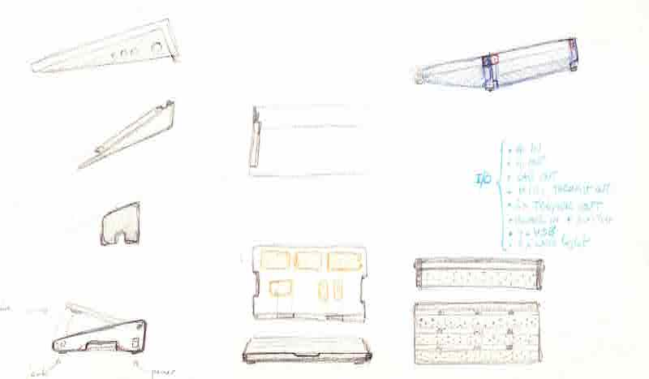
    <h2>Resources</h2>
    <p>I decided to chekck the following tools</p>
    <ul>
      <li><a href="https://tinkercad.com">Tinkercad.</a></li>
      <li><a href="https://onshape.com">OnShape</a></li>
      <li><a href="https://www.autodesk.com/products/fusion-360/students-teachers-educators">Fusion 360</a></li>
      <li><a href="https://www.shapr3d.com">Shapr3D (iPadOS)</a></li>
    </ul>
    <p>I really like Tinkercad, but it seems to be pretty limited. OnShape lured me with the promise of browser based editing, but in my experience it was a bit clunky.</p>
    <p>Initially, I settled with Fusion 360 for the follwing reasons:</p>
    <ul>
      <li>Does all the things that we seems to need</li>
      <li>Free license for students and educators. Simple registration and set up process</li>
      <li>Lots of documentation available</li>
    </ul>
    <p>Speaking of documentation, here are the resources I checked:</p>
    <ul>
      <li>Autodesk has a nomber of <a href="https://f360ap.autodesk.com/courses#getting-started-for-absolute-beginners">training videos</a> in their platform once you log in, although I found them geared towards people who already know 3D and are transitioning to Fusion 360</li>
      <li>Autodesk also has quite a few free training cursos <a href="https://www.udemy.com/courses/search/?src=ukw&q=Fusion%20360&p=1&price=price-free">on Udemy</a>.</li>
      <li><a href="https://www.makershed.com/products/fusion-360-for-makers-pdf">The book "Fusion360 for Makers"</a>, from Make Media really starts from the bare bottom.</li>
    </ul>
    <h2>Explorations</h2>
    <p>So I started with the basics... drawing a shape and trying to punch a hole through it. It took a while to understand it, because the process' implementation is very different from 2D boolean operations, despite being conceptually equal.</p>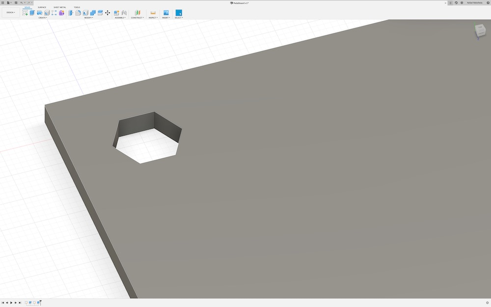
    <p>In this case I'm drawing another "sketch" to create a new piece of the pedalboard.</p>
    <p>It also gave me the opportunity to explore <b>constraints</b>, like parallel lines.</p>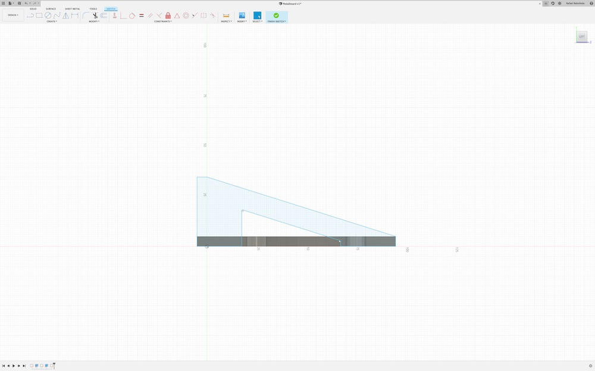
    <p>This is how both of them look together.</p>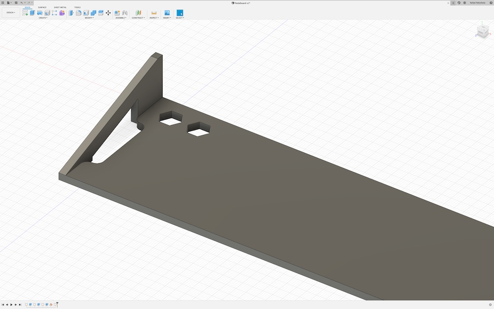
    <p>A very simple render with wood:</p>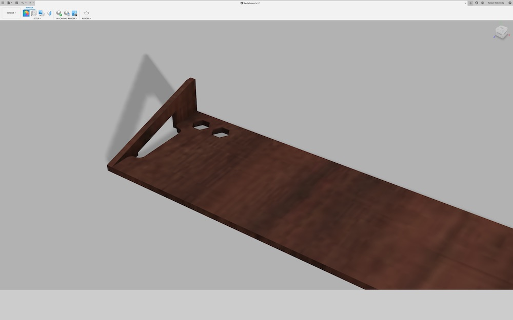
    <h2>Final Project Designs</h2>
    <h3>The machine box</h3>
    <p>This design was machined on flat 10mm plywood, so I worked in 2D in AutoCAD:</p>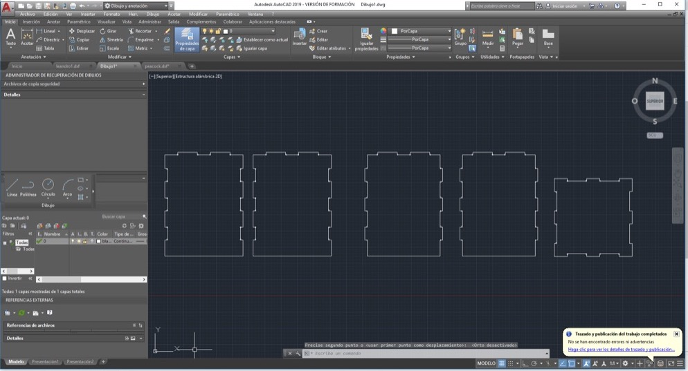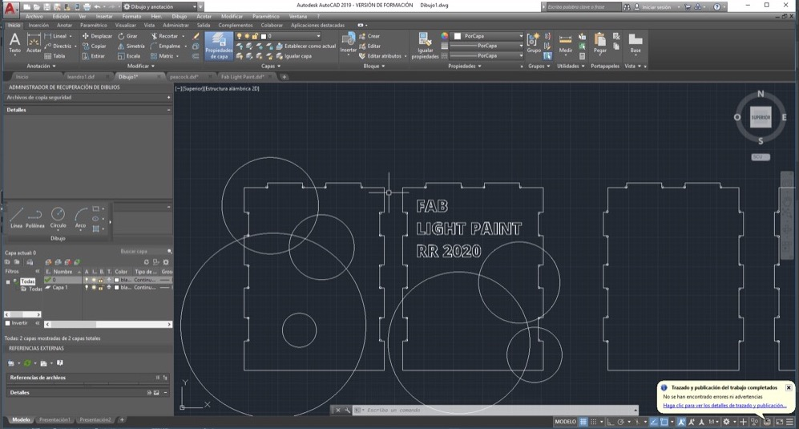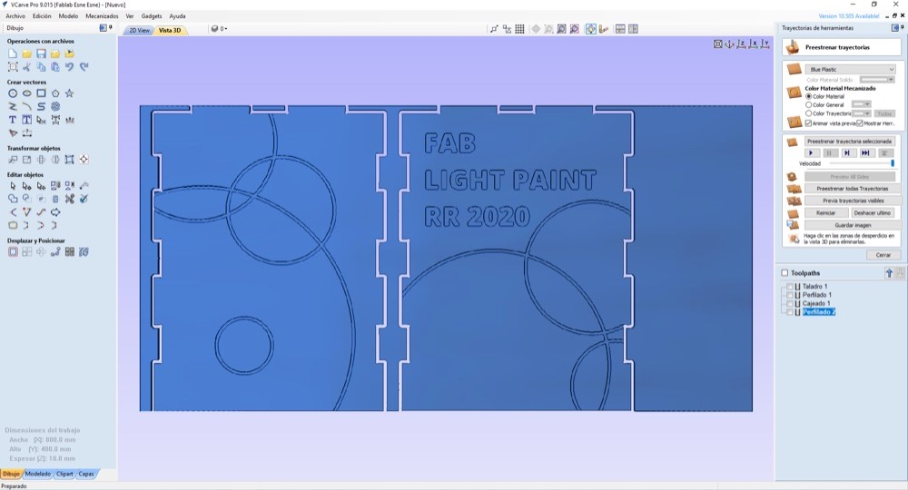
    <h3>The spinning ring</h3>
    <p>As usual, I had to go through several iterations until I came with a design that worked as expected. Early on I went for a circle. Here are a couple od designs for that:</p>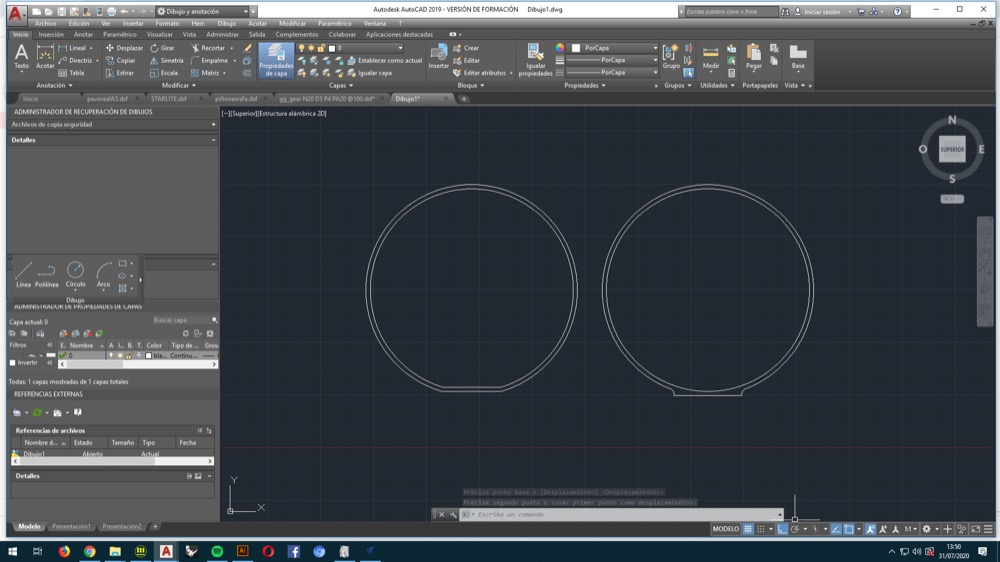
    <p>Later on I decided it was a better fit to go with a rounded-corner rectangle, which I tried in 10 mm but ended up having to go all the way up to 20 mm thickness:</p>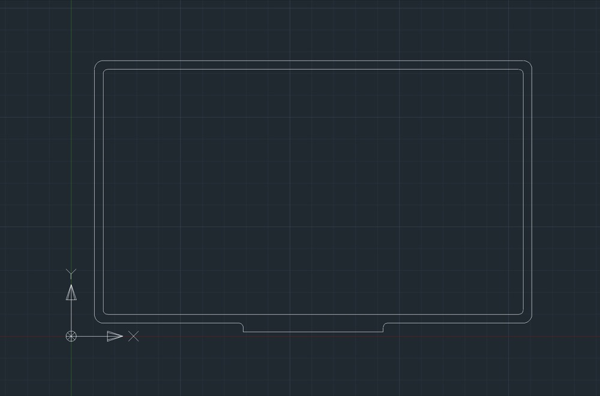
    <h3>The gears</h3>
    <p>I designed the gears with the online tool <a href="geargenerator.com">Gear Generator</a></p>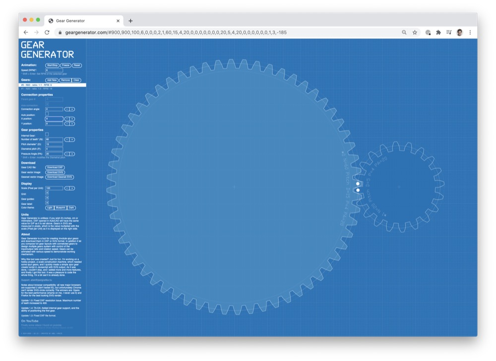
    <p>Then imported the result in AutoCAD to add a cut for the servo's fixture:</p>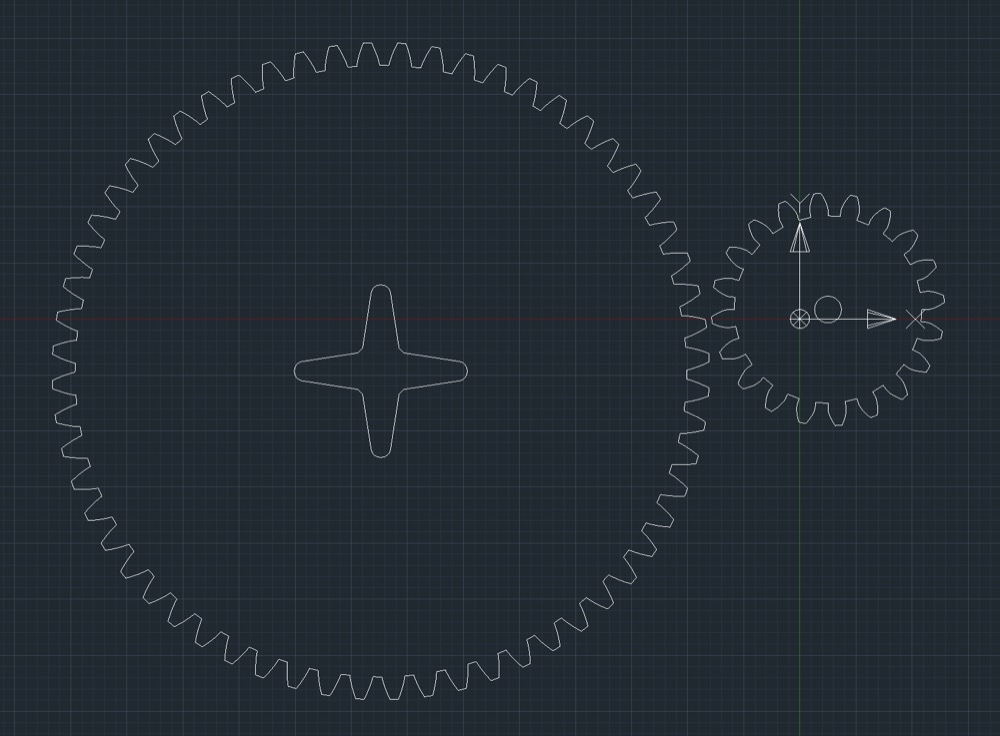
    <h3>The PCB box</h3>
    <p>For the Hello Fab Kit board I made a simple black plexiglass box with openings for the connectors:</p>
    <h3>The control panel</h3>
    <p>This is really a very simple piece with placeholder holes for all the pots and switches in the control panel, to be laser cut in plexiglass. I made this in <a href="https://designer.gravit.io/">Gravit Designer</a>, sort of an Illustrator in the cloud.</p>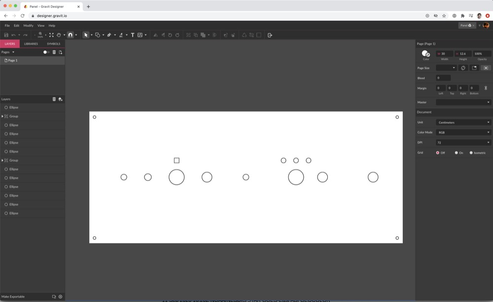
    <h3>The 3D Printed Fixture</h3>
    <p>For this part of the final project I decided to give <a href="https://www.shapr3d.com">Shapr 3D for iPad</a> a go. I wanted to try something that felt closer to designing on paper and I have to say that it has worked very well for me, and has been so far my favourite 3D app. I'm sure it can't handle the same level of complexity as other industry standard tools, but for relatively simple designs it has been quite a joy.</p>
    <p>Quite a bit of my final project designs could be done in 2D, as seen previously and in the <a href="../W7/">Computer Controlled Machining</a> assignment. But I also needed to design a key part to be 3D printed. Here's the sketch:</p>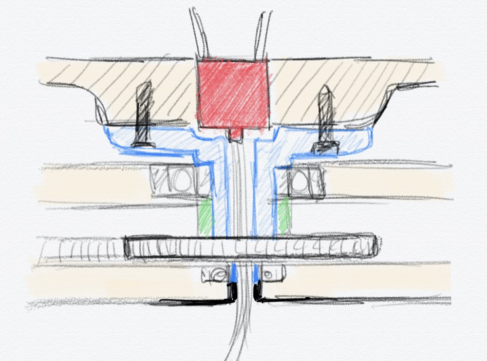
    <p>There were, of course, a few variations and iterations over the orginal idea depicted in the sketch above: two and four screws, with and without the final prong, etc. This was the first one:</p>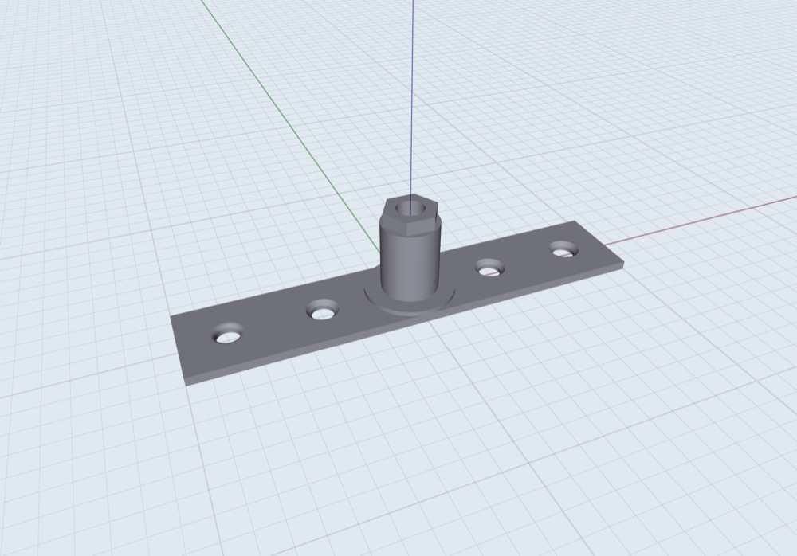
    <p>And this is the final one:</p>
    <video src="fixture.mp4" autoplay controls></video>
    <h2>Learnings</h2>
    <p>Obviously this is not a finished piece, but it has all the necessary elements already. I need to polish and create the rest of the pieces following the same approach. </p>
    <p>I've got to say that it was —maybe unsurprisingly— way harder than I anticipated, mostly because 3D and 2D software have such different interaction and conceptual models, even the utterly basic stuff like panning and zooming, or even copy/paste. This is by far the most frustrating part, but I guess also the point of the whole exercise :)</p>
    <h2>Files</h2>
    <ul>
      <li><a href="board.dxf">Pedalboard Explorations</a></li>
      <li><a href="../W7/box.dxf">Machine Wood Box</a></li>
      <li><a href="../FP/spinning_frame.dxf">Spinning Frame</a></li>
      <li><a href="../FP/hello_fabkit_case.dxf">Hello Fab Kit Case</a></li>
      <li><a href="../FP/fixture.stl">Frame/Bearing/Gear Fixture</a></li>
      <li><a href="../FP/gears.dxf">Gears</a></li>
      <li><a href="control_panel.svg">Control Panel</a></li>
    </ul>
  </main>
  <footer>
    <hr>
    <p><a rel="license" href="http://creativecommons.org/licenses/by-nc/4.0/"></a><br />This work is licensed under a <a rel="license" href="http://creativecommons.org/licenses/by-nc/4.0/">Creative Commons Attribution-NonCommercial 4.0 International License</a>.</p>
  </footer>
</body>